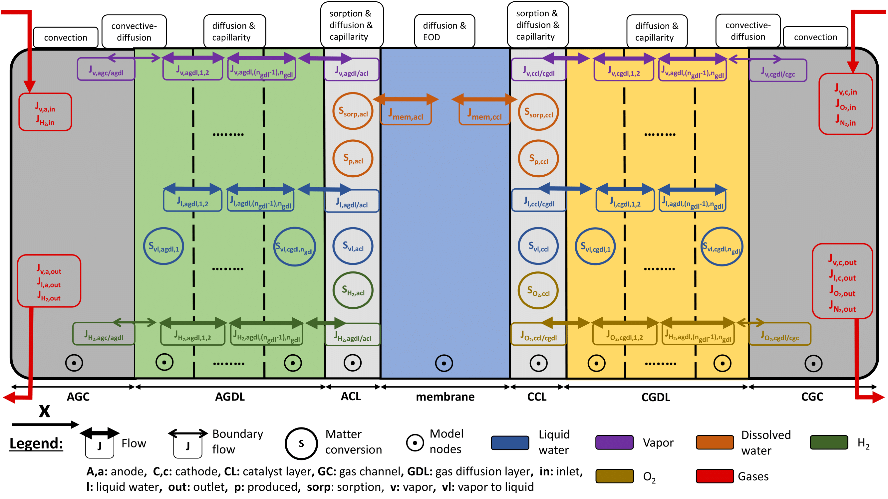

Publications
Research articles and thesis describing the AlphaPEM model and software.
Journal papers
AlphaPEM: An Open-Source Dynamic 1D Physics-Based PEM Fuel Cell Model for Embedded Applications (2025)
Raphaël Gass
Published in SoftwareX, describing the V1.0 model and initial software release.
- Journal: SoftwareX
- arXiv: 2407.12373
- HAL: hal-04647829
- SSRN: 4946674
Objective: Present the AlphaPEM software as an open-source tool for simulating PEM fuel cells with dynamic 1D physics-based modeling.
An Advanced 1D Physics-Based Model for PEM Hydrogen Fuel Cells With Enhanced Overvoltage Prediction (2025)
Raphaël Gass
Detailed model development and validation focusing on overvoltage prediction and physical relationships.
- Journal: International Journal of Hydrogen Energy
- arXiv: 2404.07508
- HAL: hal-04530852
- SSRN: 4812343
Key Contributions:
- Dynamic 1D model with enhanced overvoltage prediction
- Novel coefficient for voltage-drop relationship at high currents
- Equation adjustments for specific model implementation

A Critical Review of Proton Exchange Membrane Fuel Cells Matter Transports and Voltage Polarisation for
Modelling (2024)
Raphaël Gass
Comprehensive review of fundamental equations and phenomena relevant to PEMFC modeling.
- Journal: Journal of the Electrochemical Society
- HAL: hal-04493419
Scope: Compilation of all equations required for physics-based PEMFC modeling, with critical a nalysis and enhancement suggestions.
Thesis
Advanced Physical Modeling of PEM Fuel Cells to Enhance Their Performances (2024)
Raphaël Gass — PhD Dissertation
Development of advanced model for PEMFC optimization and predictive control.
- Repository: HAL Archives
- Institution: Aix-Marseille University, LIS Laboratory
- Period: 2021–2024
- Supervisors:
- Prof. Zhongliang Li (FEMTO-ST)
- Prof. Rachid Outbib (LIS)
- Prof. Samir Jemei (FEMTO-ST)
- Prof. Daniel Hissel (FEMTO-ST)
Objective: Develop an advanced 1D dynamic, two-phase, isothermal model for PEMFC optimization and control, resulting in the open-source AlphaPEM software.
Research groups & institutions
Development Teams:
| Period | Institution | Role | Location |
|---|---|---|---|
| 2021–2024 | LIS Laboratory | PhD and V1.0 development | Aix-Marseille University, France |
| 2025–2027 | ENERGY-Lab | Post-doctoral research and V2.0 development | University of Réunion Island, France |
Collaborating Institutions:
- FEMTO-ST Institute — Franche-Comté University, France
- ZSW Institute — Ulm, Germany
Funding
2025–2027
- European FEDER funds — OPUS-H₂ Project
- Region Réunion
2021–2024
- French National Research Agency (DEAL Project) — ANR-20-CE05-0016-01
- Region Provence-Alpes-Côte d'Azur
- EIPHI Graduate School — ANR-17-EURE-0002
- Region Bourgogne Franche-Comté
Related work
Benchmark Datasets
- ZSW GenStack — Zenodo Open-Source Hardware
- Calibrated fuel cell model included in AlphaPEM.
- Used for validation and case studies.
Supplementary research
Sensitivity analysis & surrogate modeling — Master's Student Projects
From the University of Munich Department of Statistics:
- Authors: Nathaly Vergel Serrano, Dejvis Toptani, Camila Bermudez Valderrama
- Supervisors: Dr. Giuseppe Casalicchio, Fiona Ewald
- GitHub Repository
- Inspired the validity-analysis pipeline in AlphaPEM
IRD package (Interpretable Regional Descriptors)
- Authors: Susanne Dandl, Giuseppe Casalicchio, Bernd Bischl, Ludwig Bothmann
- GitHub Repository
- Provides PRIM/MaxBox algorithms used in parameter validity analysis
Citation
If you use AlphaPEM in your research, please cite the appropriate publication:
Software & Model (V1.0):
@article{Gass2025SoftwareX,
author = {Gass, Raphaël},
title = {AlphaPEM: An open-source dynamic 1D physics-based PEM fuel cell model for embedded applications},
journal = {SoftwareX},
year = {2025},
doi = {10.1016/j.softx.2024.102002}
}Physics & Methodology:
@article{Gass2025IJHE,
author = {Gass, Raphaël},
title = {An advanced 1D physics-based model for PEM hydrogen fuel cells with enhanced overvoltage prediction},
journal = {International Journal of Hydrogen Energy},
year = {2025},
doi = {10.1016/j.ijhydene.2024.11.374}
}For questions about publications or collaboration, contact raphael.gass@univ-reunion.fr.